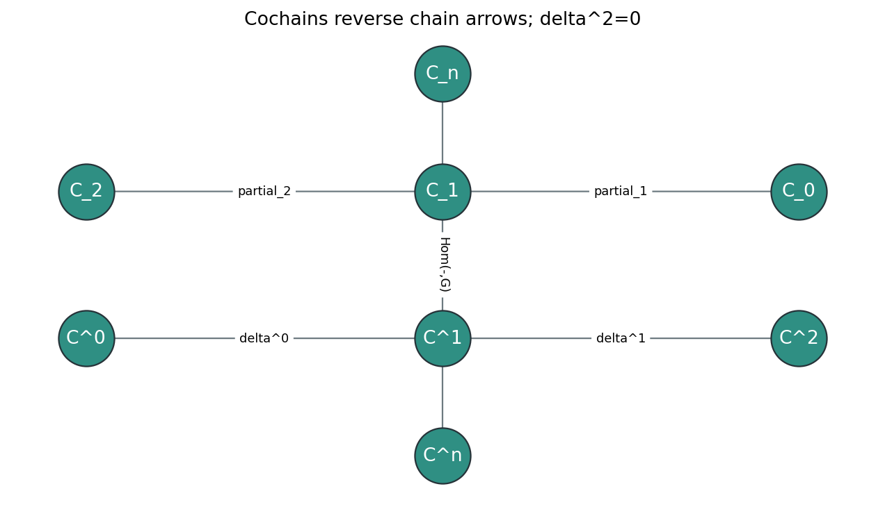
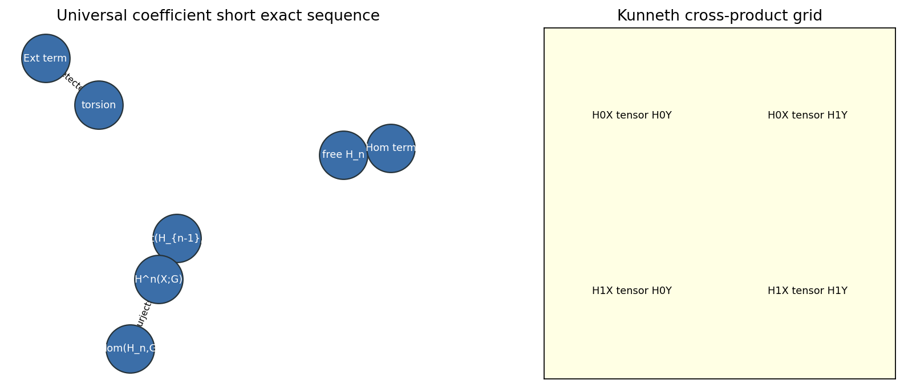
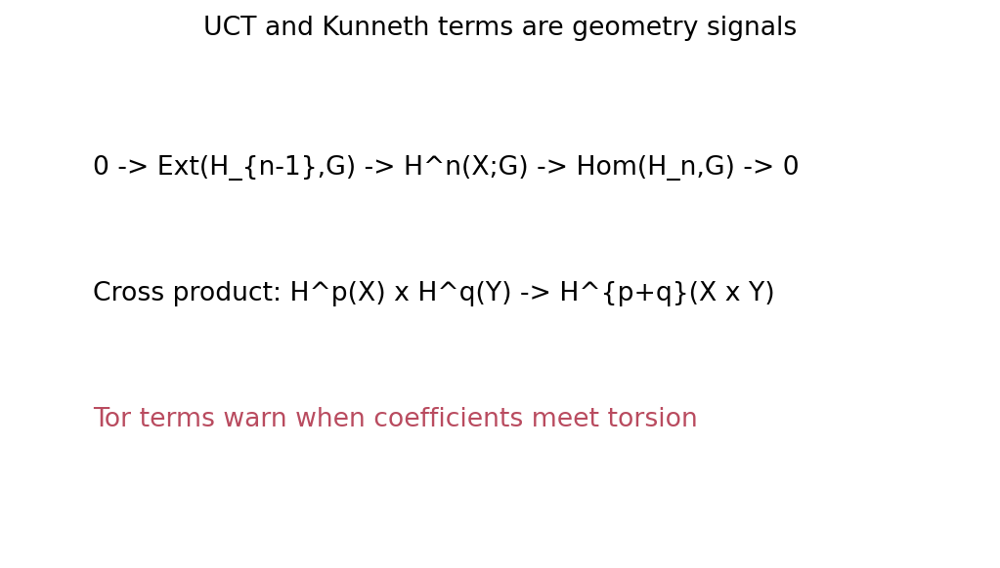

Cohomology starts as dual homology, but contravariance turns the dual theory into a calculus of products, duality pairings, coefficient operations, and twisted coefficient systems.
Lecture Thesis
Dualizing chains reverses functorial direction.
The diagonal map supplies multiplication.
Orientations turn multiplication into intersection numbers.
Coefficient exact sequences and monodromy record information ordinary homology can miss.
1. Cochains, UCT, and Kunneth
From Chains To Cochains

Local artifact: cochain-duality-pipeline.png
Definition
For a coefficient ring \(R\), a degree \(n\) cochain is a homomorphism \(C_n(X) \to R\). Thus \(C^n(X;R)=\operatorname{Hom}(C_n(X),R)\).
Dual Boundary Rule
The coboundary is defined by \((\delta\varphi)(c)=\varphi(\partial c)\), or briefly \(\delta\varphi=\varphi\partial\).
Contravariance
A map \(f:X\to Y\) pushes chains forward but pulls cochains back: \(f^*:C^n(Y;R)\to C^n(X;R)\).
In a finite cellular or simplicial model, the boundary maps are matrices \(B_n:C_n\to C_{n-1}\). The homology check is \(B_{n-1}B_n=0\).
Coboundary Matrices
Dualizing turns the coboundary into a transpose lane: \(\delta^{n-1}=B_n^T\). Therefore \(\delta^n\delta^{n-1}=(B_{n+1}B_n)^T=0\).
1
0
-1
-1
1
0
0
-1
1
boundary_squared_zerocoboundary_squared_zero
Homology information, corrected by torsion
Universal Coefficients

Local artifact: universal-coefficient-short-exact.png
Universal Coefficient Sequence
For ordinary cohomology with coefficients \(G\), there is a natural short exact sequence $$0\to \operatorname{Ext}(H_{n-1}(X),G)\to H^n(X;G)\to \operatorname{Hom}(H_n(X),G)\to 0.$$
Free Lane
Free homology classes dualize into Hom terms and behave like linear functionals on cycles.
Torsion Lane
Torsion from \(H_{n-1}\) contributes through Ext, so coefficient choice can create cohomology in the next degree.
free_Hn_dualizes_to_HomRP2 torsion creates Ext in H2
Products of spaces
Kunneth Product Grid

Local artifact: kunneth-cross-product-grid.png
Product Degrees
Classes from bidegree \((p,q)\) land in total degree \(p+q\). The clean tensor grid is the first approximation to \(H^*(X\times Y)\).
Tor Warning
With torsion or non-field coefficients, Kunneth formulas carry side terms. The grid is not complete until Tor has been accounted for.
4
tensor grid cells in the chapter check
5
sample total degree from p plus q
Tor
torsion obstruction lane
x
cross product builds classes
kunneth_tensor_grid_cells: 4tor_warning_present
The route to multiplication
Why The Diagonal Matters
Construction
The cup product is the composite: first form an external product on \(X\times X\), then pull back by the diagonal \(\Delta:X\to X\times X\).
Why Homology Does Not Get This For Free
To multiply homology classes on \(X\), one would need a natural multiplication map from \(X\times X\) back to \(X\). Most spaces do not have one.
Why Cohomology Does
Every space has a diagonal map. Contravariance turns that map into a pullback, exactly the direction needed for multiplication.